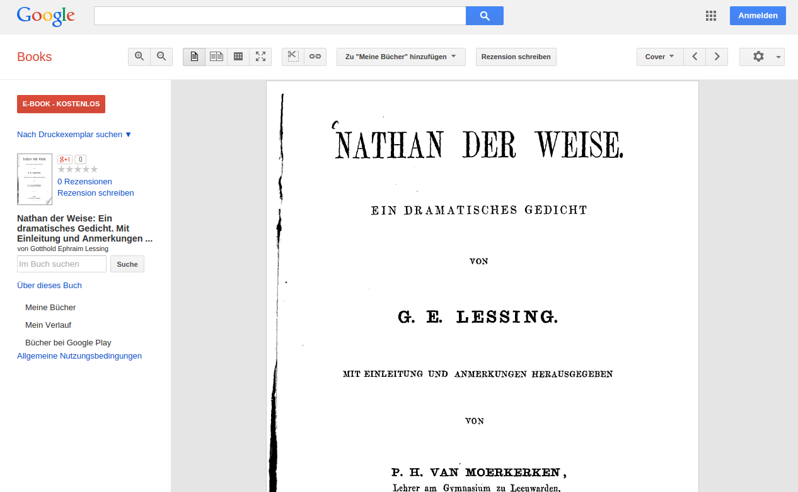
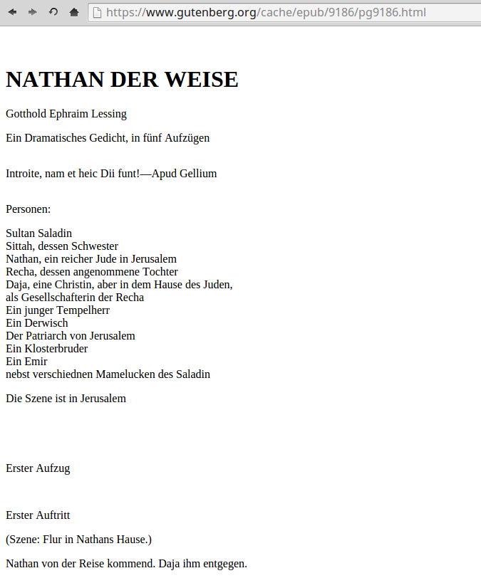
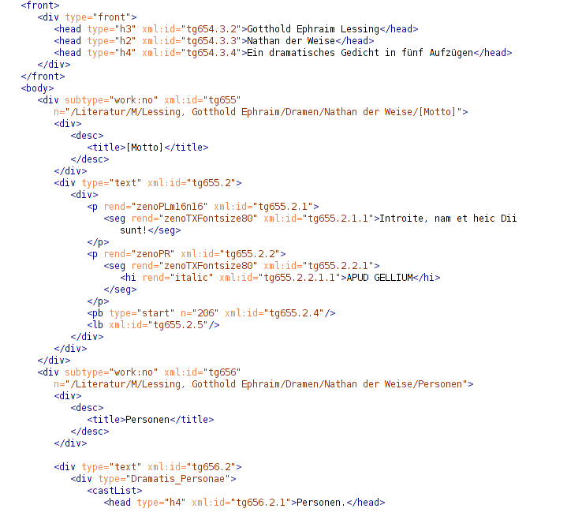
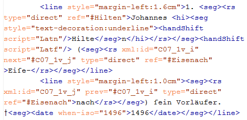
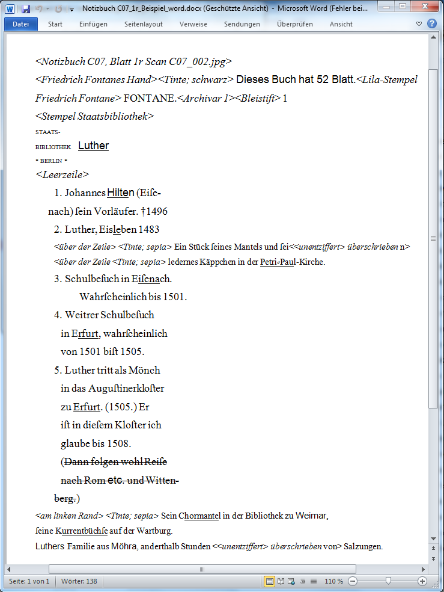
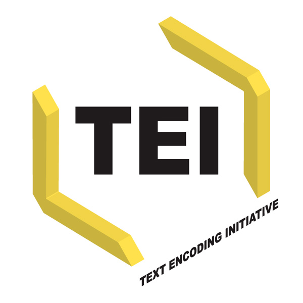

The Colors of DH
Workshop, Vienna, Apr 15 2015
Frank Fischer and Mathias Göbel

Dieses Werk ist lizenziert unter einer Creative Commons Namensnennung 4.0 International Lizenz.
Die Folien des ersten Teils haben viele Einblicke in unveröffentlichte Arbeit geboten.
Links zu Slides und weiteren Informationen:
- Wann findet die deutsche Literatur statt? (DHd Konferenz, Graz, 2015)
- Digitale LiNa
Teil 2: Ressourcen
Wie kommen wir zu einem digitalen Text und was macht diesen aus? Was ist notwendig, um Texte weiter verarbeiten zu können?
digitale Texte in all ihren Formen
SLUB, DFG-Viewer

Faksimiles
Gescannte Bücher gibt es viele online. Man findet sie über die DDB, bei den Bibliothenken selbst und man kann auch auf Wunsch digitalisieren lassen.
Bei digitalen Editionen, gehört die Anzeige von Faksimiles zum Standard.
digitale Texte in all ihren Formen
Google Books
digitale Texte in all ihren Formen
Projekt Gutenberg
digitale Texte in all ihren Formen
NATHAN DER WEISE
Gotthold Ephraim Lessing
Ein Dramatisches Gedicht, in fünf Aufzügen
Introite, nam et heic Dii funt!--Apud Gellium
Personen:
Sultan Saladin
Sittah, dessen Schwester
Nathan, ein reicher Jude in Jerusalem
Recha, dessen angenommene Tochter
Daja, eine Christin, aber in dem Hause des Juden,
als Gesellschafterin der Recha
Ein junger Tempelherr
Ein Derwisch
Der Patriarch von Jerusalem
Ein Klosterbruder
Ein Emir
nebst verschiednen Mamelucken des Saladin
Die Szene ist in Jerusalem
Erster Aufzugdigitale Texte in all ihren Formen
Das gesamte Internet ist voller Ressourcen. Sie sind von unterschiedlicher Qualität, Quantität, sprechen unterschiedliche Zielgruppen an und unterliegen verschiedenen Lizenzen.
Das Internet im Jahr 1577Als digitale Texte fassen wir auf, was in Zeichen codiert über elektronische Medien abrufbar ist. Das heißt, ein digitaler Text kann von einem Computer verarbeitet werden.
(Werden diese Texte in einen Forschungsprozess eingebunden, sind sie zugleich ein Forschungsdatum.)
XML-Strukturen
VS
Word
Word
- WYSIWYG, Word liefert eine Präsentationsoberfläche, das heißt, es wird nur auf einen Output hingearbeitet. Dabei ist es (fast) egal, wie ich ein bestimmtes Ziel erreiche. Ich kann zum Beispiel, um einen Abstand einzurichten:
- 17 mal Leertaste drücken
- Tabstopps setzen
- Eine transparente leere Form als Zwischenraum einfügen
- …
- Außerdem fehlt die Semantik: Durchgestrichener Text ist kein getilgter Text.
DOCX, das (Standard-)Format, in dem man Word-Dokumente abspeichert, ist proprietär
- Weil nur eine Firma weiß, wie es wirklich funktioniert
- Weil man ein best. Programm dafür benötigt
- Folgekosten nicht absehbar sind
- Es gelten Lizenzvereinbarungen. Die müssen recherchiert und verstanden werden.
Bild zu „Editor War“ > http://de.wikipedia.org/wiki/Editor_War
XML
- offen | keine Lizenzgebühren
- nicht proprietär | kontrolliert durch das W3C
- nachhaltig
- standardisiert
- austauschbar | einfache Textdateien
Was sagt das W3C dazu?
Elemente, Attribute, Attributwerte, Text
This is a sentence. Leerzeichen und Zeilenumbrüche spielen (eigentlich™) keine Rolle.
Leere Elemente:
XML selbst, legt kaum mehr, als oben genannt, fest.
It was a dark and stormy night.
The wind howled and leaves blew off the trees.
A dog barked in the distance.
Inside, the flames in the fireplace struggled to resist the
draft through the window.
Jane struggled to stay warm under a blanket.
XML selbst legt kaum mehr als oben genannt fest.
It was a dark and stormy night.
The wind howled and leaves blew off the trees.
A dog barked in the distance.
Inside, the flames in the fireplace struggled to resist the
draft through the window.
Jane struggled to stay warm under a blanket.
XML selbst legt kaum mehr als oben genannt fest.
It was a dark and stormy night.
The wind howled and leaves blew off the trees.
A dog barked in the distance.
Inside, the flames in the fireplace struggled to resist the
draft through the window.
Jane struggled to stay warm under a blanket.
XML ist ein Standard
XML muss standardisiert werden

Luther das thüringiſche Heer focht un
ſ
t
er ſeinem landgräflichen Banner
Und dann das...
Jetzt wissen wir, wie der Code aussehen sollte. Für die Sprecher im Drama:
[...]
Nathan.
[...]
[...]Was man tatsächlich findet:
eine kleine SammlungKennt man die Struktur der Dokumente, kann man gezielt abfragen.
[Übung: XQuery]
[Übung: XQuery]
Alle Beispiele finden Sie in dieser eXist-db.
Wortsuche, Ausgabe der Sprecher
($q bezeichnet das gesuchte Wort)
for $treffer in collection('/db/apps/vienna/drama/')//tei:TEI//tei:text[contains(., $q)]//preceding::tei:teiHeader[1]//tei:title[1]/string()
return $trefferSuche nach einem Dramentitel und Ausgabe der Sprecher
($q bezeichnet das gesuchte Wort, welches im Titel vorkommen soll)
for $treffer in collection('/db/apps/vienna/drama/')//ti:speaker[contains(., $q)]
return $trefferNetzwerke erstellen
- nach allen unterschiedlichen Sprecherbezeichnungen (Suchen Sie nach dem Titel anderer Dramen und lassen Sie sich Netzwerke generieren...)
- mit zurückschreiben der Verbesserungen aus dem Spiel
Visualization

Quelle: http://www.xkcd.com/688/
URL zu eXist-db
http://tinyurl.com/TGsade